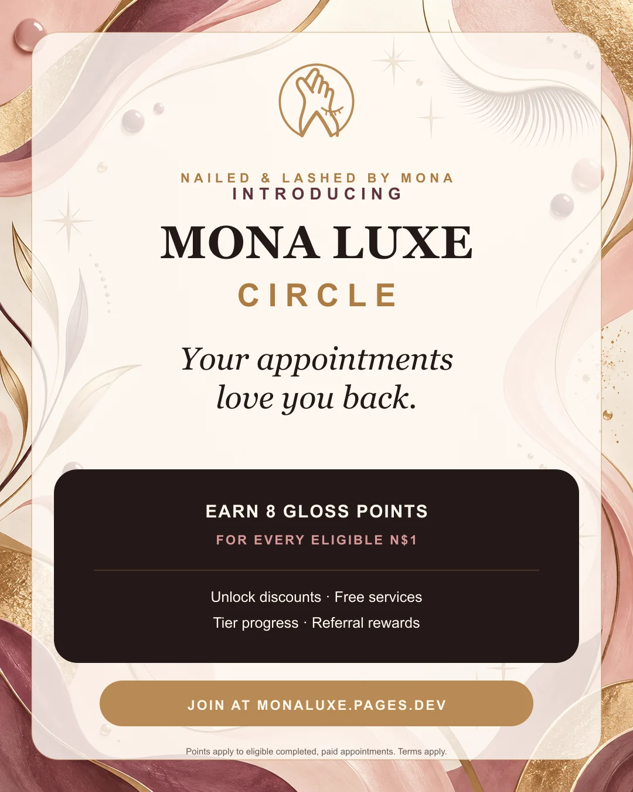
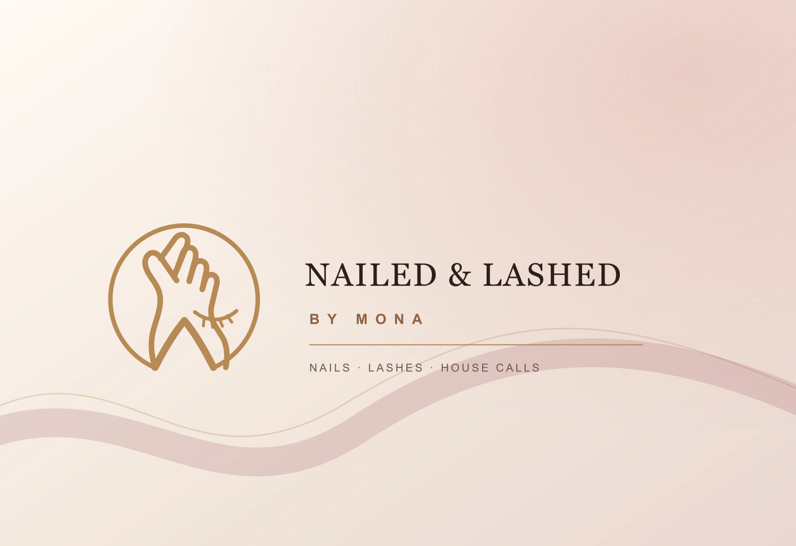

NAILED & Lashed by Mona · Windhoek · 2026
A beauty business,
turned into a connected client studio.
An installable booking experience, real-work lookbook, client reward wallet and private studio CRM—designed to turn first visits into lasting client relationships without losing the personality of Mona’s work.
Product strategyIdentity enhancementLoyalty designUX/UIFull-stack buildCloud launch

The brief
Luxury energy.
Zero booking friction.
Mona needed more than a brochure. The business serves clients from Khomasdal and through house calls, accepts multiple payment methods, and grows through repeat relationships and visual trust. The experience had to make all of that feel effortless on the device clients actually use.
We built one coherent loop: explore real work, understand transparent starting prices, join Mona Luxe Circle, choose a studio visit or mobile route, request a slot, return faster, and let Mona run the business from a protected workspace.

✦
DESIGN DIRECTION
Sophisticated,
simple and alive.
The visual system pairs pearl cream, ink black, salon gold and a playful blush accent with expressive typography and tactile motion.


The experience architecture
One seamless relationship.
Discover
Real photography, tactile galleries and short-form reveals establish trust quickly.
Join
A simple return-client profile saves the relationship, not just the next appointment.
Book
Studio visit or house call, with service, route, timing and payment clarity.
Earn
Completed and paid eligible appointments settle Gloss Points into the client wallet.
Return
Book again, follow tier progress, redeem a reward and share a referral code.
Operate
Mona manages bookings, clients, payments, rewards and business signals privately.
Retention, made visible
The gloss comes
back to you.
Mona Luxe Circle gives return clients a simple reason to stay connected. Eligible completed and paid appointments earn Gloss Points; tier progress, available rewards, upcoming bookings and a personal referral code remain visible in one calm client dashboard.
Travel fees do not earn points. Rewards have no cash value and remain subject to the published Mona Luxe Circle terms.

The studio behind the studio
One desk.
The whole client relationship.
Mona’s private workspace brings appointments, payment state, client history, loyalty balances, referral activity and business signals into one responsive operating surface.
- Booking pipeline and client CRM
- Collected and outstanding visibility
- Reward ledger and referral tracking
- Configurable services, travel and schedule
- Responsive owner controls for mobile and desktop
Built to work
Not a mockup.
A connected system.
Cloudflare Pages and KV persistence support bookings, client accounts, rewards and live configuration. Client PIN credentials are salted and derived, sessions are opaque and protected, public requests are bounded and rate-limited, and no banking credentials are stored.
Explore the live build →
One identity, everywhere
From booking screen
to WhatsApp Status.
The enhanced Mona Luxe mark, app icons and launch campaign use one pearl-cream, salon-gold, blush and ink system. Feed posters, Stories and WhatsApp Status pieces carry the same hierarchy as the product, so the campaign feels like the experience clients open.
The result
Every return feels
like Mona.
A light-hearted, editorial identity wrapped around serious booking, loyalty and client-operations infrastructure—ready for first visits, easier returns and a business that can see the relationships it is building.